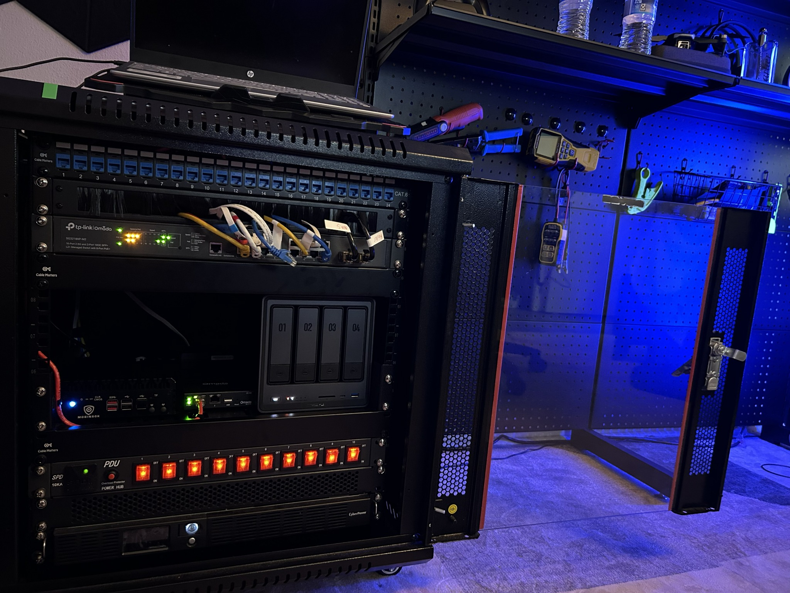
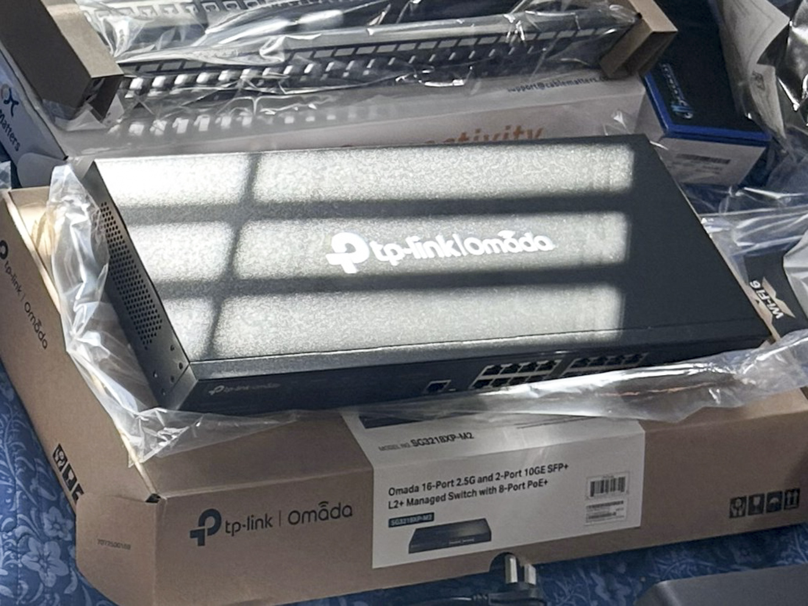
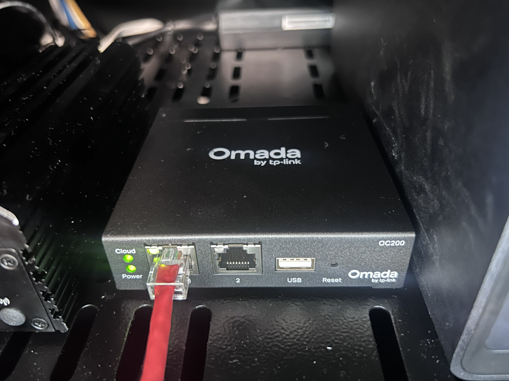
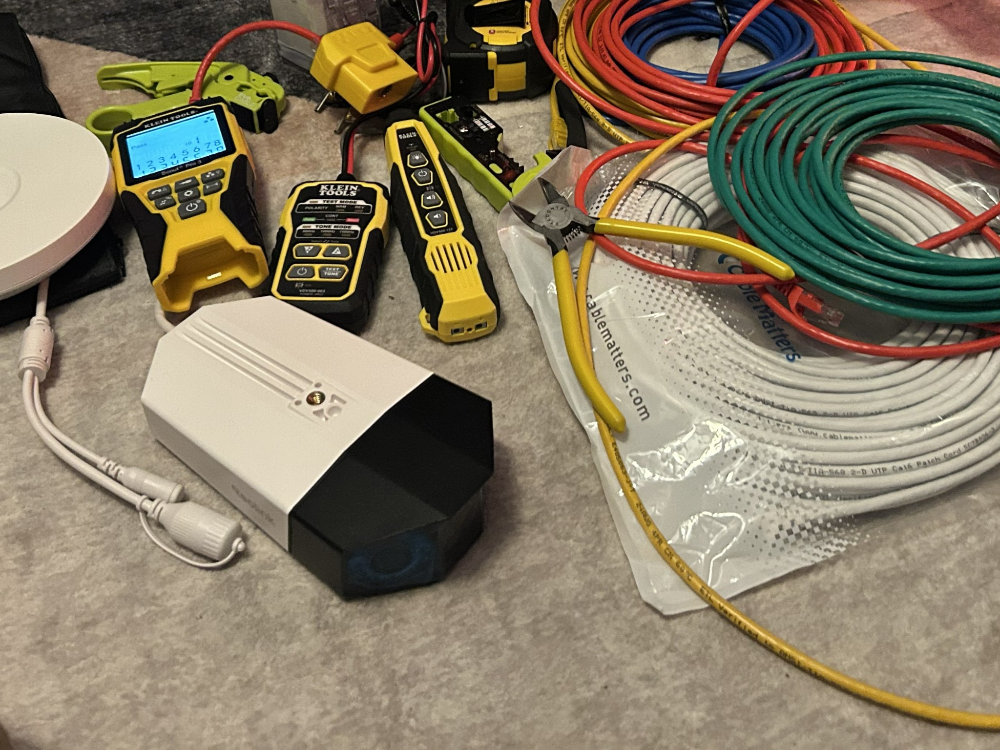
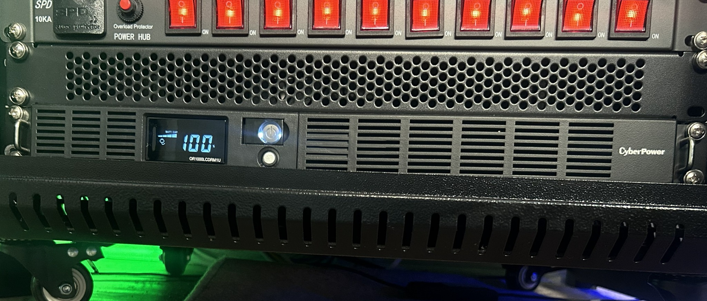

Firewall Appliance
Intel N100 mini PC running pfSense
Four Intel i226 2.5 GbE interfaces provide dedicated connectivity and multi-gig routing capacity.
Planned and assembled a reliable multi-gig home-lab foundation connecting firewall, switching, wireless, storage, surveillance, management, and lab equipment.
The goal was to build a physical platform that could support everyday home devices, isolated cybersecurity experiments, centralized storage, IP cameras, guest access, and secure infrastructure management. The design prioritizes reliability, serviceability, wired multi-gig performance, wireless coverage, and future expansion.

Each component was selected for a specific infrastructure role.
Intel N100 mini PC running pfSense
Four Intel i226 2.5 GbE interfaces provide dedicated connectivity and multi-gig routing capacity.

TP-Link JetStream SG3218X-M2-series managed switch
Acts as the wired distribution point for the firewall, access points, NAS, cameras, and workstations.

Two TP-Link EAP650 Wi-Fi 6 access points
Separate AP placement provides broader coverage and dedicated wireless service for home and lab use.

TP-Link Omada OC200 hardware controller
Provides centralized, always-on management for the Omada switch and both EAP650 access points without depending on a workstation-hosted controller.
UGREEN DXP4800 Plus NAS
Provides centralized storage, backups, and a recording destination for the surveillance system.

Two Reolink Duo 3 PoE dual-lens cameras
Each camera provides a 180° panoramic view, receives power and network connectivity over Ethernet, and records video to the NAS.
HP OfficeJet Pro 8125e
Connects wirelessly through the HOME access point and provides shared printing for trusted household devices.

CyberPower OR1000LCDRM1U Smart App LCD UPS
Provides battery backup and power protection for critical network and storage equipment.
One rack-mounted PDU
Distributes power from the protected power system to the installed infrastructure components in an organized manner.
The managed switch is the central distribution point for every wired infrastructure component.
Defined the wired, wireless, storage, surveillance, management, and lab requirements before selecting compatible multi-gig equipment.
Connected the ISP handoff to the pfSense appliance and installed the managed switch as the core distribution layer.
Connected the OC200 controller, both access points, the NAS, two PoE cameras, management workstation, and lab equipment to planned switch ports, then joined the HP OfficeJet Pro 8125e to the HOME wireless network.
Integrated the CyberPower UPS and PDU, then organized power and Ethernet cabling so devices and connections could be identified, maintained, and expanded.
Verified power, Ethernet link status, negotiated speeds, device visibility, and access-point placement before beginning logical configuration.
A single managed-switch core simplifies cabling, troubleshooting, expansion, and later network segmentation.
Using two APs improves physical coverage and allows home and lab wireless workloads to be served independently.
Central storage supports backups and continuous camera recording while remaining available to approved systems.
Continue the series: Part 2 — Network Segmentation & Security →